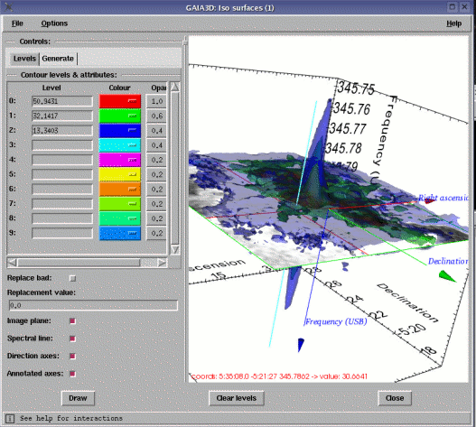

Using this window you can view 3D surfaces that represent the same data value throughout a data-cube, these are called iso-surfaces. Each iso-surface, as well as having a data level, has a colour and an opacity. Using opacity allows you to see one surface within another. An opacity of 1 is completely opaque and 0 transparent.
It is also possible to add iso-surfaces from other cubes.
The simplest way to define levels is to select the Generate tab and press the Generate button. This will guess three levels that present typical data in the currently viewed image (not cube). Generation can also be based on percentile levels within the image, or by using magnitude intervals. You can of course just type in values directly.
When you are defining more than one level you should make sure that the opacities chosen run in the same direction as the levels (assuming you have positive data), that ensures that you can see inside the outermost surface (hint start at level 0 with your highest value). Using the same opacity for all levels sometimes works well, but when the levels and opacities run opposite to each other you will see confusing effects (the drawing order for isophotes is from level 0).
Now you have some levels press Draw to see the rendered scene.
By default the levels you give are sorted into increasing order before being drawn. This makes sure (for positive data) that inner surfaces are drawn before outer ones. To switch this behaviour off toggle the Options->Sort levels menu item.
If you can no longer see any graphics then try pressing the r key. That resets scene to view all the data.
There are two modes of mouse interaction, joystick and trackerball, these are position sensitive and motion sensitive modes. In joystick mode, the default, motion of the scene occurs as long as a button is pressed, in trackerball mode you need to press a button and move the mouse as well.
The Up/Down/Left/Right keys rotate the scene. Combining with Control slows the movement.
The Shift-Up/Down keys zoom the scene in and out. Combining with Control slows the movement.
The Alt-Up/Down/Left/Right keys pans the scene. Combining with Control slows the movement.
The Shift-Left/Right keys roll the scene about the centre. Combining with Control slows the movement.
To view the position of the current slice that is displayed in GAIA you must enable the Image plane, do this by ticking the checkbutton. This draws a 2D image in the correct position. If you now change the index of the plane in the image sections toolbox this will move to reflect the new position, as will the image slice displayed in the main window (this is best seen on a machine with dual monitors). You can also move the plane itself and changes to its position will be reflected elsewhere (like an extracted spectrum), to do this you press and hold the middle mouse button somewhere over the image plane (not the edges, they have other interactions) and move the mouse. Note when the image plane is displayed the mouse interactions described above that control the scene are overridden, you need to move off the image plane to regain these (hint: use the keyboard interactions when working at high zooms).
To change the extraction axis do the same interaction at the edges, this will rotate the image plane and snap to the nearest axis on release (when you press the middle button on the image plane an inner blue box is drawn, you need to press outside this).
There is limited control over the opacity of the image plane in the Options->Image plane opacity menu. This allows you to make it see-through, so all the parts of the volume can be seen, or make it completely clear (in which case you see just an outline of its position, but note the mouse interactions will be disabled by this choice).
Another option is to choose a colour table for the image plane.
To view the position of the extracted spectrum (if one has been extracted, you must do that first by clicking on the main image), you need to enable the Spectral line by ticking the checkbutton. The position of this line will be updated as you drag around on the main image. To move the line within the scene you press mouse button 1 on the image plane (which must also be enabled) and drag around. Note that this action also reports the current coordinates and data value at that point on the image plane in the cube.
When rotating a cube it's easy to become disoriented and loose the directions of the celestial and dispersion axes. To see this enable the Direction axes, which draws an set of arrow lines pointing in the directions of the world coordinate axes (not the cube axes, RA and Dec are not necessarily aligned with those). These will remain permanently in view.
For presentation purposes a set of annotated axes can be labeled and drawn using the Annotated axes checkbutton (this is drawn by the AST subroutine library). If the labels become reversed so you cannot read them just redraw the scene.
You save a copy of the current scene to TIFF, JPEG, PNG and EPS formats using the File->Print dialog. Make sure that the window is uncovered and fully drawn before using this.
If your NDF data contain bad values, then you may need to replace these with some other value before you can successfully contour. For iso-surface work, unlike volume rendering, this will not generally be needed, so the default is to not replace bad values. If you do need to do this then the downside of this is that a copy of your data is made.
The position for FITS data is more complicated, but much of the above applies to those as well. The greater complication is that FITS data has a fixed byte order (bigendian), so for some machines (notably those with Intel processors) the overhead of creating a copy cannot be avoided.